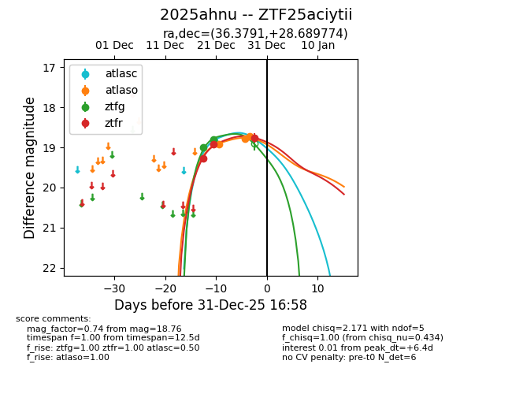
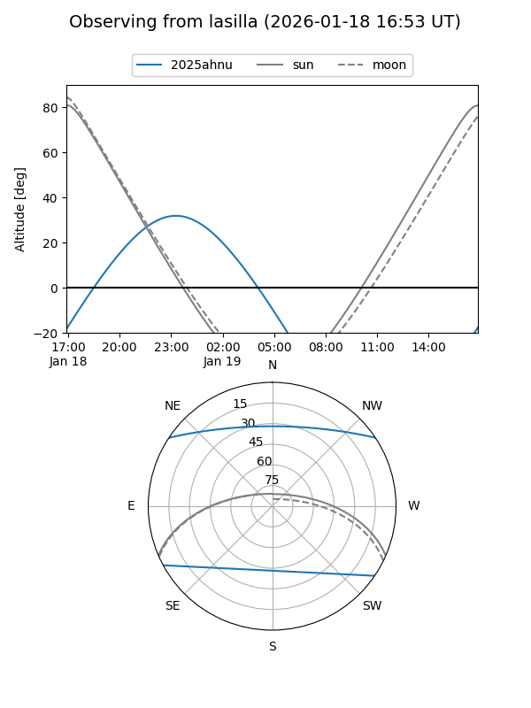
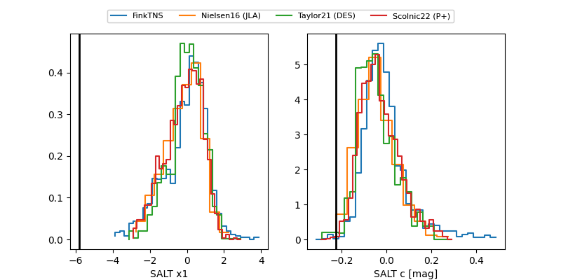

2025ahnu
Target 2025ahnu at 2025-12-31 16:15
Aliases and brokers:
FINK:
Lasair:
ALeRCE:
TNS:
YSE:
alt names
ZTF25aciytii (ztf,fink_ztf)
2025ahnu (tns,yse)
Coordinates:
equatorial (ra, dec) = 36.3791,+28.68977
equatorial (HMS+DMS) = 02:25:30.99,+28:41:23.19
galactic (l, b) = (146.7237,-29.79928)
Flags:
Photometry:
last atlasc=18.85, atlaso=18.66, ztfg=18.80, ztfr=18.76
1 atlasc, 3 atlaso, 2 ztfg, 3 ztfr detections
Lightcurve

Visibility


Additional plots
